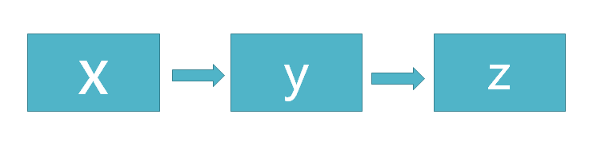
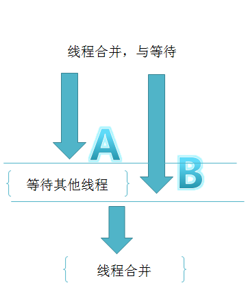
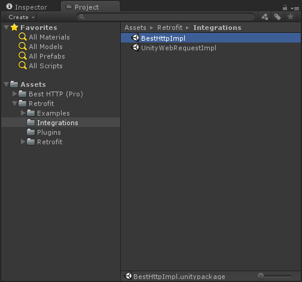
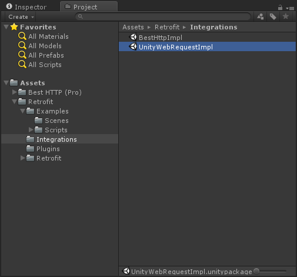

如何优雅的在Unity中发送REST API请求
在Unity中经常使用的网络请求模块，有官方的UnityWebRequest模块，BestHttp第三方插件等。他们的使用方式都大同小异，通过Url的拼接处理，提供各种方法来应对REST请求的各种模式（Get/Post/Delete/Patch）与参数，使用的代码如下
//BestHttp
HTTPRequest request = new HTTPRequest(new Uri("http://server.com/path"),HTTPMethods.Post,OnRequestFinished);
request.AddField("FieldName", "Field Value");
request.Send();
//official UnityWebRequest module
WWWForm form = new WWWForm();
form.AddField("myField", "myData");
using (UnityWebRequest www = UnityWebRequest.Post("http://www.my-server.com/myform", form))
{
yield return www.SendWebRequest();
if (www.isNetworkError || www.isHttpError)
{
Debug.Log(www.error);
}
else
{
Debug.Log("Form upload complete!");
}
}
如果项目中的REST API请求的数量变大的情况下，就会出现几钟情况：
- Http请求的代码的代码分散在工程中
- 如果把请求代码集中放置，这个类会非常巨大，将包含各种涉及底层请求模块的代码，如
www.SendWebRequest()和request.AddField("FieldName", "Field Value"); - 如果涉及多线程请求处理，例如在子线程发送请求，在主线程更新UI，那么代码将变得更加难以集中统一维护
在Android开发中，得到大量应用和验证的网络请求库
Retrofit,将REST API变成一个个的接口定义，在业务代码中可以像调用方法一样去请求API函数,代码将变得非常优美和容易维护。
那么在Unity中有没有这样的库呢，奈何目前是没有的。.Net版本的Retrofit倒是有一些，例如refit、Retrofit.Net,可惜的是这些版本都是基于.Net 4.5开发的，并不适用与大多数基于.NET 3.5运行时开发的Unity工程。
在这种情况下，只能自己写一个适用于Unity .NET 3.5 工程的Retrofit模块了。
Retrofit for Unity
实现过程中，尽量保持跟Java版本一致，得益于Java跟C#语言基本类似，很多实现基本没有大碍，例如Java的注解对应C#的特性。但是有一些语言特性是C#没有的，例如Java的类动态代理，在C#是没有的，就会在定义Client的REST接口的时候产生一些差别。
下面着重介绍下该模块的使用方式。
简介
Retrofit for Unity把Http API描述变成接口直接使用。下面是一个REST API的接口化定义
public interface IHttpBinInterface
{
[Get("/get")]
IObservable<HttpBinResponse> Get(
[Query("query1")]string arg1,
[Query("query2")]string arg2
);
}
如何使用
3个步骤：
-[1] 定义一个Interface:该接口用来管理你的 HTTP API。
-[2] 继承 RestAdapter 并实现该接口: 在接口方法实现中只需要调用 SendRequest(args...) 即可。
public class HttpBinService:RestAdapter,IHttpBinInterface
{
private static HttpBinService _instance;
public static HttpBinService Instance
{
get
{
if (_instance == null)
{
var go = new GameObject("HttpBinService");
_instance = go.AddComponent<HttpBinService>();
}
return _instance;
}
}
protected override HttpImplement SetHttpImpl()
{
var httpImpl = new HttpClientImpl();
httpImpl.EnableDebug = true;
return httpImpl;
}
protected override void SetRestAPI()
{
baseUrl = "http://httpbin.org";
iRestInterface = typeof (IHttpBinInterface);
}
public IObservable<HttpBinResponse> Get(string arg1, string arg2)
{
return SendRequest<HttpBinResponse>(arg1,arg2) as IObservable<HttpBinResponse>;
}
}
在Java版本的Retrofit中不需要这一步的原因就是使用了类的动态代理:
GitHubService service = retrofit.create(GitHubService.class);//GitHubService为Interface
由于语言特性的差别，C#没有这个特性，且Unity中官方请求模块UnityWebRequest和WWW都是基于协程实现的，而协程只能在MonoBehavior中使用，因此为了兼容官方模块，RestAdapter作为通用基类适配器需要继承MonoBehavior，业务请求服务直接继承RestAdapter，并实现REST接口的方法。
-[3] 调用方法: HttpBinService将负责把你的方法调用变成向服务端发送的Http网络请求。
var ob = HttpBinService.Instance.Get("abc", "123");
ob.SubscribeOn(Scheduler.ThreadPool)//send request in sub thread
.ObserveOn(Scheduler.MainThread)//receive response in main thread
.Subscribe(data =>
{
// onSuccess
Debug.LogFormat("Received on threadId:{0}", Thread.CurrentThread.ManagedThreadId);
},
error =>
{
Debug.Log("Retrofit Error:" + error);
});
在Java版本的Retrofit中借助RxJava来实现异步的请求。好在Unity版本中也有Reactive Extension的扩展
UniRx，借助UniRx,可以快速实现Retrofit for Unity的异步请求。
API 声明
在接口的方法中使用C# 特性来标识一个请求将被怎么发送，特性可以被标识在方法和方法参数上。
请求方式
每一个方法必须要有一个Http方法类型的特性来提供请求方式以及相对地址，该组件提供6种内置的特性来标识GET, POST, PUT, DELETE, PATCH and HEAD请求，相对地址在特性中标识即可。
[Get("/users")]
当然，也可以直接在URL地址中使用查询URL。
[GET("/users/list?sort=desc")]
URL动态组装
URL可以通过中括号+变量名来动态组装，如{any string},同时，用来动态替换URL的参数必须使用 [Path]特性来标识，并且需要使用相同的string值。
[Get("/group/{id}/users")]
IObservable<<List<User>> GetList(
[Path("id")] int groupId);
Query查询语句也可以使用同样的方式来组装动态查询URL。
[Get("/group/{id}/users")]
IObservable<<List<User>> GetList(
[Path("id")] int groupId,
[Query("sort")] string sort);
对于更复杂的查询，建议使用QueryMap来实现。并且通过这种方式可以实现数量可变的查询URL。
[Get("/group/{id}/users")]
IObservable<<List<User>>GroupList(
[Path("id")] int groupId,
[QueryMap] Dictionary<string, string> options);
带BODY的请求
一个Body对象可以通过 [Body] 特性来完成带Body的请求。
[POST("/users/new")]
IObservable<User> CreateUser(
[Body] User user);
该object对象将使用RestAdapter中指定的转换器Convert来把对象转换成string并发往服务端，默认情况下，RestAdapter将使用DefalutConverter(Implemented by Newtonsoft.json) 来完成转换任务。
FORM ENCODED请求
方法也可以声明为发送form-encoded 数据的请求。
当有参数使用[Field]特性标识时，[Field]中的字符将作为健，参数值将作为值来发送form-encoded数据。
[POST("/user/edit")]
IObservable<User> UpdateUser(
[Field("first_name")] string first,
[Field("last_name")] string last);
HEADER 的组装
可以使用 [Headers] 特性来标识静态的Header数据
[Headers("Cache-Control: max-age=640000")]
[GET("/widget/list")]
IObservable<List<Widget>> WidgetList();
[Headers({
"Accept: application/vnd.github.v3.full+json",
"User-Agent: Retrofit-Sample-App"
})]
[GET("/users/{username}")]
IObservable<User> GetUser(
[Path("username")] string username);
注意：Headers没有同健覆盖功能，即使Headers的健相同也会一起发送出去。
如果需要动态组装Header，可以在参数中用[Header]来标识这是一个动态参数化的Header组装。
[GET("/user")]
IObservable<User> GetUser(
[Header("Authorization")] string authorization)
Retrofit 配置
RestApater 类负责将API接口转换成可以调用方法的对象。默认情况下Retrofit会自动配置好供你调用，当然所有的配置都是可以自定义的，这是为了方便扩展以及功能细分。
序列化和反序列化配置
Retrofit默认使用 Newtonsoft.json 库来完成序列化和反序列化。
如果API接口返回的结构不能被默认配置的解析库解析，或者你想要用别的库来完成转换工作，那么这个时候，你只需要创建一个类并实现 Converter 接口，并在Adapter的Setup()中指定这个实例来完成转换的工作即可。
结合Rx的异步网络请求实践
var observable = RxRestBestHttpClient.Instance.RxGetList("square", "retrofit");//声明可观察对象
observable
.SubscribeOn(Scheduler.ThreadPool) //将网络请求切换到预定义的线程池中的某个线程执行
.ObserveOnMainThread() //请求完成时，在主线程呈现数据
.Subscribe(
data =>
{
Debug.LogFormat("Receive on threadId:{0}", Thread.CurrentThread.ManagedThreadId);
Debug.Log("Retrofit Success:" + data[0].testField);
},
error =>
{
Debug.LogError("Retrofit Error:" + error);
});
定义可观察对象后observable之后，通过observable.Subcribe(Action<T> onNext, Action<Exception> onError)的调用后，网络请求才会发送出去，默认情况下，如果没有调用SubscribeOn()和ObserveOn()，请求线程跟回调线程都是在主线程完成。
Scheduler+Linq多线程请求与切换
使用Scheduler完成多线程请求与回调切换
在上面的例子种可以看到IObserable在被订阅前使用了2个方法：SubscribeOn(Scheduler.ThreadPool) 和ObserveOnMainThread()，实际上他们是使用了IObserable<T>的扩展方法SubscribeOnand ObserveOn,
1/SubscribeOn 告诉Rx可观察对象的产生运行在哪个线程。
2/ObserveOn告诉Rx数据流的观察处理运行在哪个线程。
所以如果需要做一些耗时操作，例如网络请求和文件读写都可以通过SubscribeOn来将他们放到异步线程去处理。然后通过ObserveOn来在主线程处理回调的数据。中间不需要关心线程安全的问题，Rx已经在底层帮我们处理好了。
注意：如果SubcribeOn调用之后，不调用ObserveOn，那么观察也会在运行在之前切换到的子线程。并不会自动切换回主线程处理观察数据。
使用Linq扩展操作符简化开发
Rx除了支持LINQ的原生操作符，并且拓展了许多很实用的操作符，并且可以支持自定义操作符，操作符的数量在源源不断的添加中。具体请参考文档，这里列举几个业务模块中经常使用到场景。
线程串联
在业务开发中，遇到需要先请求X，通过X的响应数据，再请求Y，通过Y的响应数据，最后请求Z，时序模型如下图。
可以通过Linq语法这样写，Rx已经内部实现对Linq的支持。

var quert = from x in ObserableWWW.Get("http://github.com");
from y in ObserableWWW.Get(x)
from z in ObserableWWW.Get(y)
select new {x,y,z}
query.Subcribe(x=>Debug.Log(x),ex=>Debug.LogException(ex));
线程合并
在业务开发中，遇到需要先请求A和B，需要A和B的请求都返回后进行下一步，任意一个请求出错下一步都无法执行，并且只有2个网络请求都返回结果之后才进行下一步的处理，而且A和B两个网络请求没有关联，运行在不同线程，时序模型如下图。

var query = Observable.Zip(
ObserableWWW.Get("http://github.com")),
ObserableWWW.Get("http://google.com")),
(github,google) => new {goole,bing});
query.Subcribe(x=>Debug.Log(x),ex=>Debug.LogException(ex));
这里只需要通过一个扩展操作符Zip来实现即可，完成了线程等待和线程合并的功能。
更多操作符
Rx提供了许多操作符来简化程序员的工作，上面介绍的只是冰山一角，更多的操作符在官网有介绍，并且大部分UniRx都可以支持，如果在遇到一个业务场景的时候，不知道选择哪个操作符可以实现我们的功能，那么可以参考A Decision Tree of Observable Operators，来辅助选择操作符
与不同Http模块的结合
Retrofit只是一种代码风格的设计，可以美化代码及方便管理API。它并不会真正的发送任何一个Http网络请求。这些工作都交给底层的网络请求库来实现，这也就意味着Retrofit for Unity 可以跟各种各样的网络请求插件或者是Unity官方的 UnityWebRequest 模块来结合使用。默认情况下，该组件提供3种组合方式，即HttpClient、UnityWebRequestImpl and BestHttpImpl，默认情况下使用HttpClient作为底层网络请求模块，因为它是一个基于System.Net的非常简洁的RESTful API的网络请求模块，并且完全开源。如果你需要跟其他网络插件结合使用，那么只需要实现HttpImplement接口，并在Adapter的Setup()中指定一个实例即可。
与 BESTHTTP的结合使用
- 导入BestHttp 插件.
- 导入Retrofit for Unity.
- 导入在Integrations目录下的
BestHttpImpl.unitypackage.
 - 用BestHttpImpl实例作为RestAdapter中的SetHttpImpl()方法的返回值.
protected override HttpImplement SetHttpImpl()
{
return new BestHttpImpl();
}
与 UNITYWEBREQUEST的结合
要想使用 UnityWebRequest, unity 版本必须是5.4或更高.
- 导入Retrofit for Unity.
- 导入在Integrations目录下的
UnityWebRequestImpl.unitypackage.
 - 用UnityWebRequestImpl实例作为RestAdapter中的SetHttpImpl()方法的返回值.
protected override HttpImplement SetHttpImpl()
{
return new UnityWebRequestImpl();
}